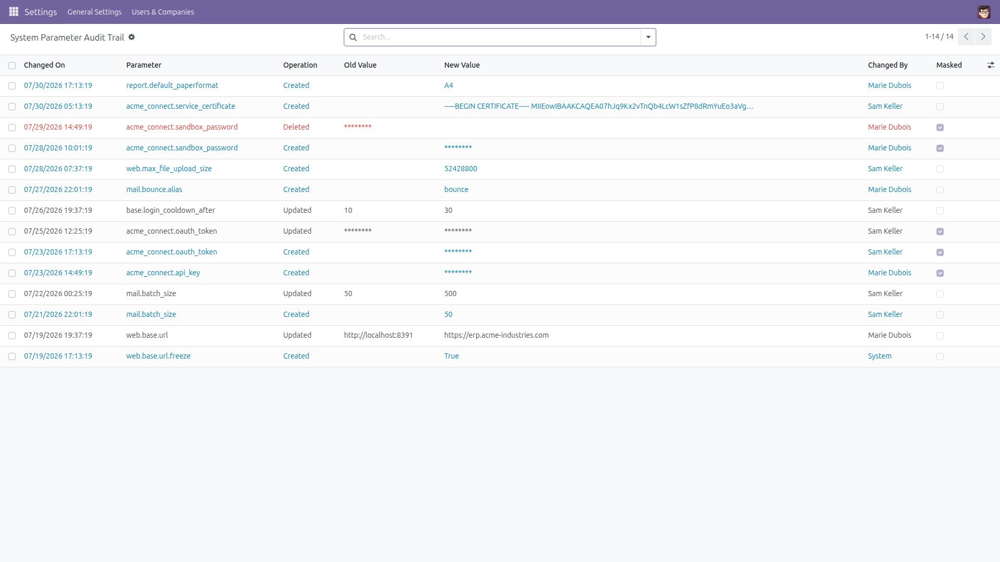
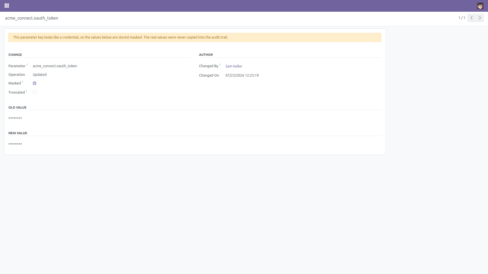
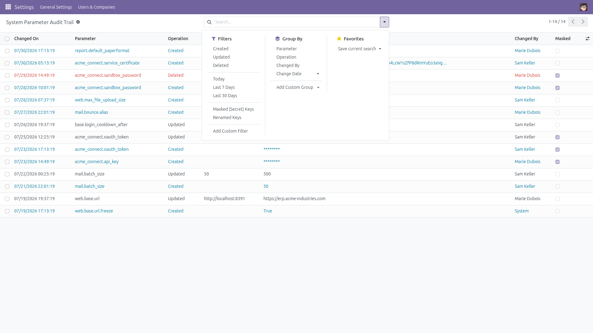
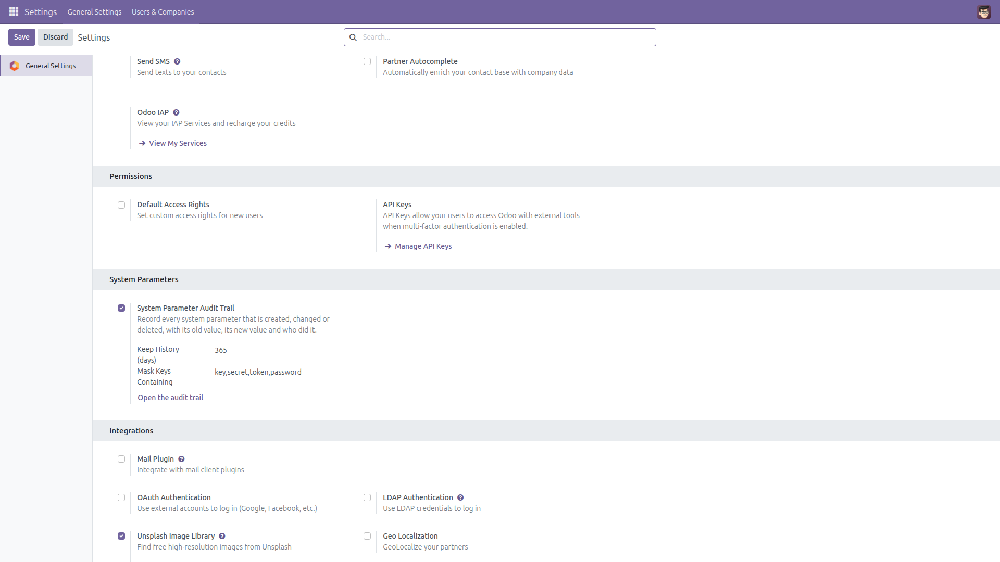

System Parameter Audit Trail
Who changed which setting, when — and what it used to be
System parameters silently control half of Odoo’s behaviour: the base URL, mail size limits, feature switches, integration endpoints. Nothing in Odoo records who changed one, when, or what the value used to be — the row is simply overwritten and the previous value is gone.
This module records every system parameter that is created, changed or deleted, with the key, the old value, the new value, the author and the timestamp.
Free and open source (LGPL-3), Odoo 14.0 through 19.0.
- Old value and new value — side by side, for every create, update and delete.
- Author and timestamp — who did it and exactly when, including changes made through
set_param() by other modules and by the Settings pages.
- Secrets are masked — parameters whose key contains
key, secret, token or password (the list is configurable) are stored as ******** in both the old and the new value. The real value is never copied into the audit table, so the trail never becomes a second place where your API keys are readable.
- Long values are truncated — anything over 512 characters is stored cut down to its first 512 characters and the row is flagged Truncated, so a certificate or a JSON blob is not duplicated into the trail.
- Filters that answer real questions — created / updated / deleted, today / last 7 days / last 30 days, masked keys, renamed keys, or one parameter name; group by parameter, operation, author or date; export to spreadsheet with Odoo’s standard export permission.
- Retention with a daily clean-up — keep the history for the number of days you choose (365 by default, 0 keeps it for ever); a scheduled action removes the rest.
- Auditing can never break a configuration change — every hook runs inside a database savepoint and a
try/except. If the audit write fails, the failure goes to the server log and the parameter change still succeeds.
- Tamper-resistant and admin only — the access rules grant read access only, so nobody — administrators included — can create, edit, back-date or delete an entry; the module writes the rows itself and the retention clean-up is the only thing that removes them. The list is restricted to the Administration / Settings group.
Screenshots

Every change to a system parameter: date, parameter, operation, old value, new value and author — most recent first.

A key that looks like a credential: the change is recorded and attributed, but both values are stored masked and the row says so.

Ready-made filters and groupings: operation, date window, masked keys, renamed keys, by parameter or by author.

Three settings: switch the trail on or off, how many days of history to keep, and which key fragments mean “secret”.
Installation
- Copy the module into your addons path, or install it from the Apps list.
- Open Apps, remove the “Apps” filter, search for System Parameter Audit Trail and click Install.
- Only the standard
base_setup module is required.
Configuration
- Go to Settings → General Settings → System Parameters.
- System Parameter Audit Trail — tick to record changes (on by default).
- Keep History (days) — how long rows are kept; the daily scheduled action removes older ones. Set
0 to keep them for ever.
- Mask Keys Containing — comma-separated, case-insensitive fragments; default
key,secret,token,password. Leave empty to mask nothing.
- Changes to these three settings are always recorded, even while auditing is switched off, so the trail can not be turned off silently.
Usage
- Open the trail with the Open the audit trail button on the Settings page, or from Settings → Technical → Parameters → System Parameter Audit Trail (the Technical menu requires developer mode).
- The list shows the most recent change first, with both values and the author.
- Filter by Created / Updated / Deleted, by Today / Last 7 Days / Last 30 Days, by Masked (Secret) Keys or Renamed Keys, or type a parameter name in the search box.
- Group by Parameter to read the whole history of one setting, or by Changed By to see what one administrator changed.
- Open a row to read long values in full, or select and Export for a security review (exporting needs Odoo’s standard “Allow Export” permission).
What is and is not covered
- Only system parameters (
ir.config_parameter, the System Parameters list) are audited. Company fields, user preferences and other models are not.
- Changes made before the module was installed can not be shown — nothing recorded them.
- Masked values are stored as
********: the trail proves that a secret changed and who changed it, never what it was changed to.
- Values longer than 512 characters are stored cut down to their first 512 characters, and the row is flagged Truncated.
- The author is the user who made the change, including when a module writes the parameter with
sudo() on their behalf. Changes made by scheduled actions, by the command line or during a module installation are recorded as OdooBot, since no user is behind them; when code genuinely runs as OdooBot inside a web request, the logged-in user of that request is recorded instead.
- Identical behaviour on every supported series (14.0 – 19.0).
License: LGPL-3 · Source on GitHub · Issues and contributions welcome.